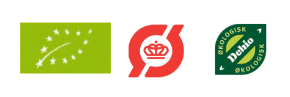

NEMME, HURTIGE, OG SMAGSFYLDTE OPKSIRFTER
PASTA
Tag på opdagelse igennem vores dejlige pastaretter!
Du finder både opskrifter på under 20 min. Samt tilbyder vi vegetariske, veganske og glutenfrie
forslag til en lækker aftensmad/frokost.
Vores pasta er fremstillet af 100% durum hvede og lokalt kildevand fra Dolomitterne af Pastificio
Felicetti srl.
Vi tilbyder både gluten fri pasta, samt forskellige variationer af pasta
GRØD
Nemme, lækre og smagfulde grødretter, som både kan spises til morgen, middag og aften! og så kan de endda laves på mindre end 10 min!?
De økologiske ris 100 % fuldkorn som betyder, at alle skaldele og kimen er bibeholdt.
Urtekram økologiske grødris giver masser af muligheder for variation og kan bruges til at koge en
lækker og indbydende grød.
LINSER
Linser er fyldt med protein, fiber og næringsstoffer!
Vores økologiske linser er bløde, fyldige og ikke rigtig til at komme på tværs af. Giver supper et
cremet pift,
lægger en god bund under fisken, kyllingen eller stegen i ovnen og er slet ikke til at komme uden
om, hvis du er til indisk dahl!
Udvid madevner og opdag nye smagfulde madretter.
RIS
Linser er fyldt med protein, fiber og næringsstoffer!
Vores økologiske linser er bløde, fyldige og ikke rigtig til at komme på tværs af. Giver supper et
cremet pift,
lægger en god bund under fisken, kyllingen eller stegen i ovnen og er slet ikke til at komme uden
om, hvis du er til indisk dahl!
Udvid madevner og opdag nye smagfulde madretter.